Lessons / Options, earnings and volatility
0DTE Iron Condor Bot in Python: Strikes, Exits and a Stop Your Broker Won't Hold (Alpaca)
A same-day (0DTE) iron condor on SPY, run by a plain Python program on an Alpaca paper account. What an iron condor is, from the four legs to the most it can lose; why today's options have no delta on free data, and how the at-the-money straddle gives the expected move instead; then the part most bots get wrong: getting out. Four exit rules - a profit target, a stop, the price touching a short strike, and a closing time before Alpaca's expiry-day cutoff - checked by the program, because the broker holds no stop for an options order, and a closing order that walks its price until it fills. Replays of real days show each rule firing, then a real condor on the paper account. For learning how options and automation work. For education only, not financial advice.
Prices and numbers are as of the video's publication, November 7, 2026.
The code for this lesson: github.com/nexusfissioncode/algo-trading/tree/main/iron-condor-bot
Where we are Watch from 0:49
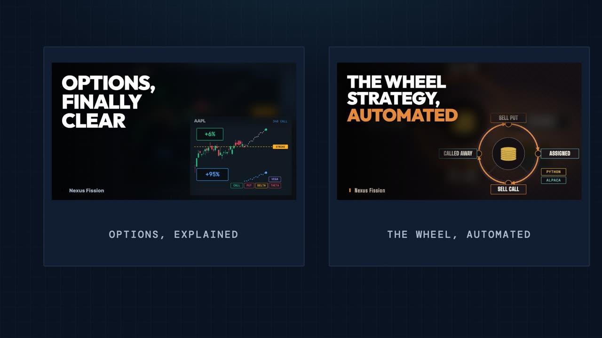
If calls, puts and strikes are new to you, the options video explains them from nothing, and the wheel bot built the first options program on this same paper account. You will not need either one: every idea comes again as it is used.
An option's last day Watch from 1:04
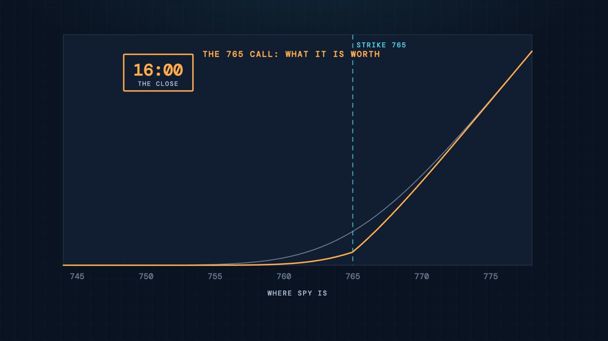
Every option has an expiry, and after it, it is worth only what it pays at that moment. Zero DTE means zero days to expiry: options that expire on the day they are traded.
Here is one, the 765 call, through its last day. In the morning it is worth something even with SPY below the strike, because there is still time to get there.
By the close that time is gone. Below the strike it is worth nothing; above it, only the difference. That melting is called time decay, and whoever sells the option is paid for it.
And same-day options have become huge. In the third quarter of this year, Cboe counted a record 24,000,000 DTE contracts a day, about 36% of all options traded.
The iron condor Watch from 1:47
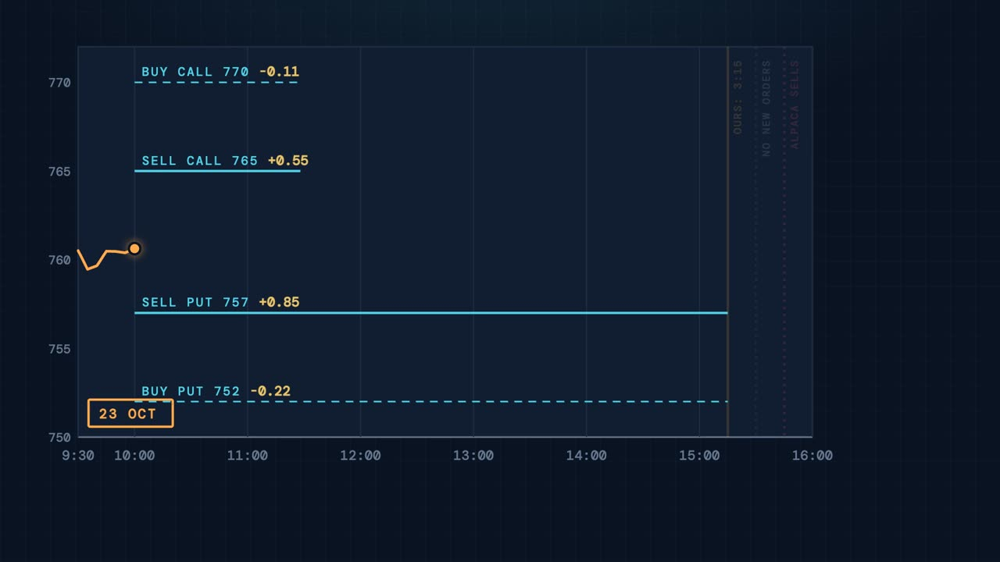
An iron condor is four options on the same expiry, two spreads in one: a put spread under the price and a call spread over it. Here is a real one, on the 20 third of October, at ten in the morning.
First, sell a put below the price, at 757. Someone pays 85 cents a share for your promise to buy SPY there.
Then buy a put $5 lower, for 22 cents. That one caps the loss if SPY falls through.
The same above the price: sell a call at 765 and buy one $5 higher.
What the two you sell pay, less what the two you buy cost, is the credit: a dollar and seven cents a share, $107 for one condor, since a contract is 100 shares. The corridor between the short strikes is where SPY has to stay.
That is the condor this bot set up that day, replayed on its real prices.
It priced the straddle, and from it the expected move. More on both in a moment.
Then the four strikes: the shorts about that far out, each wing $5 further.
Here is what that condor makes or loses at the close, for every price SPY could end on.
Anywhere inside the corridor, all four options expire worthless, and it keeps the whole credit: $107.
Past a wing, the loss stops growing: the width, $5, less the credit, times 100. $393, the most it can lose.
In between are the breakevens: the short strikes, moved out by the credit. It is a trade that wins small and often, and loses bigger, less often. That is why the exits matter.
Two things go wrong. The first is speed. On the 20 fifth of September, SPY fell almost $3 in the five minutes after a condor like this one was opened, straight through the short put.
The second is assignment. SPY options are American style, so they can be exercised early, and at the close anything a cent in the money is exercised. A short option can turn into 100 shares of SPY.
Where the strikes go Watch from 3:50
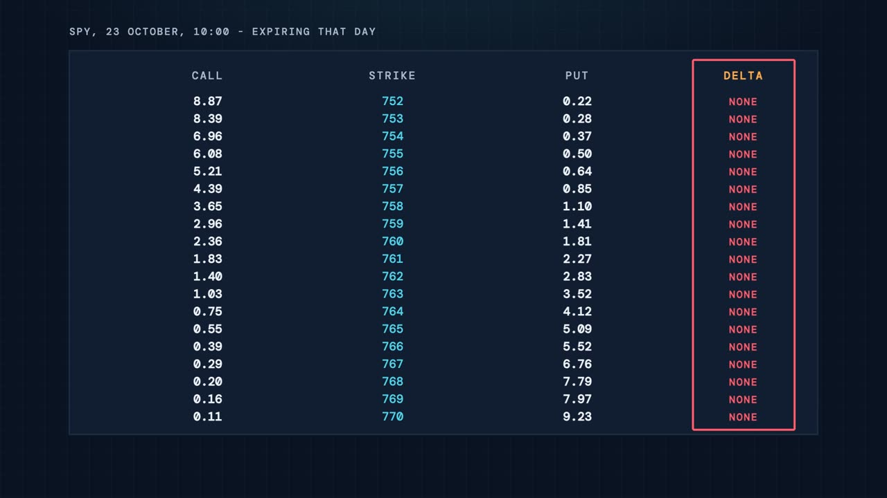
So where do the strikes go? Many option bots choose them by delta, a rough chance of ending in the money.
But on Alpaca's free data, options that expire today or tomorrow come with no delta at all. For the 20 eighth of October, 302 contracts, and not one with a delta. A few days further out, about half have one.
So the bot uses prices instead. At ten o'clock that day, the strike nearest the price, 761, had a call at a dollar and 83 cents and a put at $2.27.
Buy both, and you profit if SPY moves far enough either way. That pair is the straddle. On this morning it cost $4.10: what the market charged for the rest of the day's move.
85% of it is a common yardstick for the expected move, here about three and a half dollars. The rule comes from tastylive, who meant it for one-off events like earnings, so treat it as a rough guide.
The bot sells the strikes at least that far out, 757 and 765, and buys the wings $5 beyond them.
Each of those choices is one line of the bot's settings file.
The time it opens the condor: ten o'clock, New York time, after the opening swing has settled.
How far out the short strikes go: 85% of the straddle.
And how wide the wings are: $5. Every number here is a placeholder to learn with, not advice.
The exits Watch from 5:16
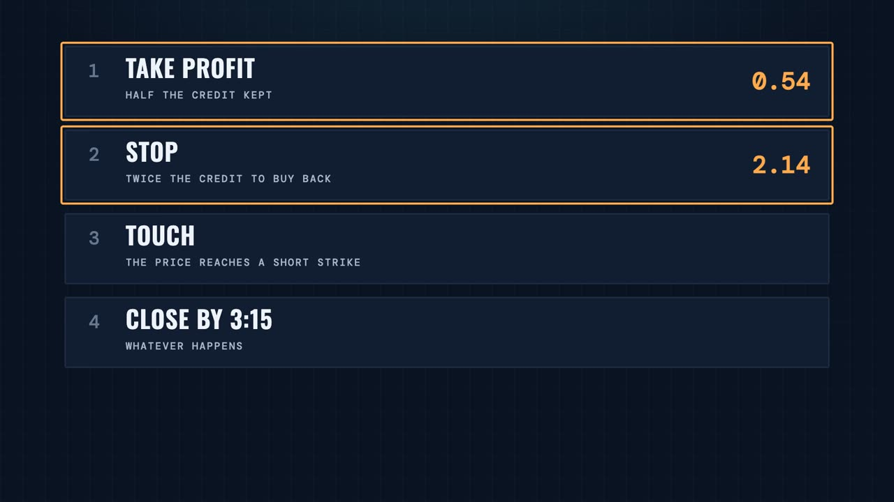
Now the exits. Every few seconds the bot works out what buying the condor back would cost, and checks four rules, in order. The first one that fires closes it.
One: take profit, once half the credit is kept. On the 20 third, when buying back cost 54 cents or less.
Two: the stop, when buying back costs twice the credit, so the loss is about the credit itself.
Three: close if SPY touches a short strike, often before the stop is reached.
Four: close by a quarter past three, whatever happens.
Why must the program check them itself? At Alpaca, an options order is a market order or a limit order. There is no stop order to leave with the broker.
So the stop lives in the code, and it only works while the program is running. If the laptop sleeps, nothing is watching the condor.
And the day has walls.
On expiry day, Alpaca stops taking orders for SPY options at half past three, New York time. Anything sent later is rejected.
At a quarter to four, it starts selling out expiring positions itself.
So the bot's own closing time sits before both, at a quarter past three, with room for a closing order that takes a few tries.
Here are the four rules in the code: one function, checked in order.
Buying back costs half the credit or less: take profit.
Twice the credit or more to buy back: the stop.
The price at or past a short strike: touch.
And the closing time, a quarter past three: close, whatever the price is doing.
Otherwise, it holds, and looks again a few seconds later.
Their numbers are in the settings file too: half the credit for the target,
twice the credit for the stop, so a bad day costs about what the condor paid,
and a quarter past three to close. Change any of them in this one file.
Getting out on a wild day Watch from 7:10
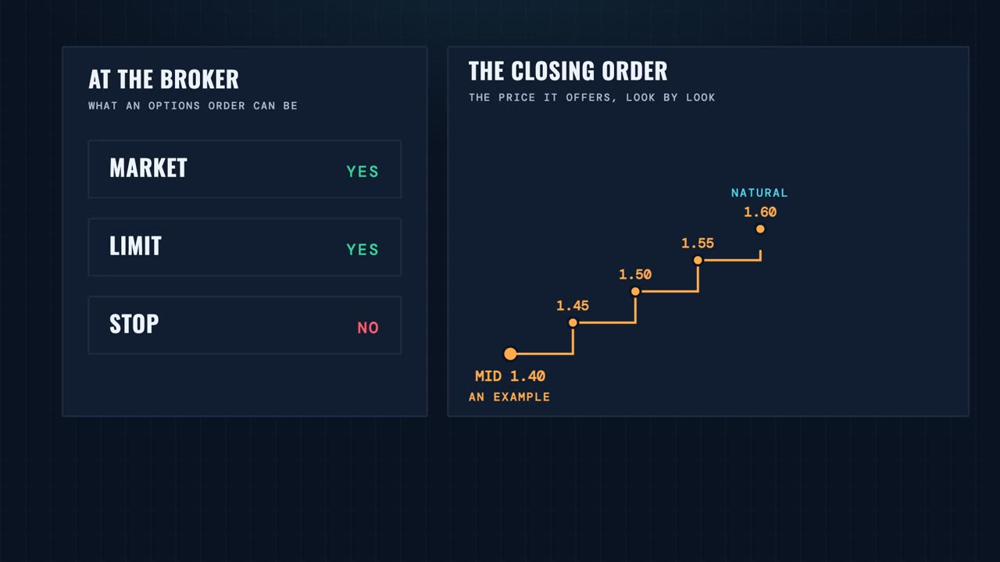
Deciding to close is half of it. The closing order still has to fill.
The bot sends one order for all four legs, which Alpaca takes as a single order, starting at the mid price, halfway between bid and ask.
If no one takes it in ten seconds, it reads the quotes again and offers a little more, step by step, up to the natural price: every short bought back at its ask, every wing sold at its bid.
And when the market is running away, a couple of steps beyond it. An order that never fills is no exit at all.
And the walk, in the closing file: a list of prices to ask, in order.
The mid first, then even steps up,
towards the natural price, and never below the mid.
Getting ready Watch from 7:53
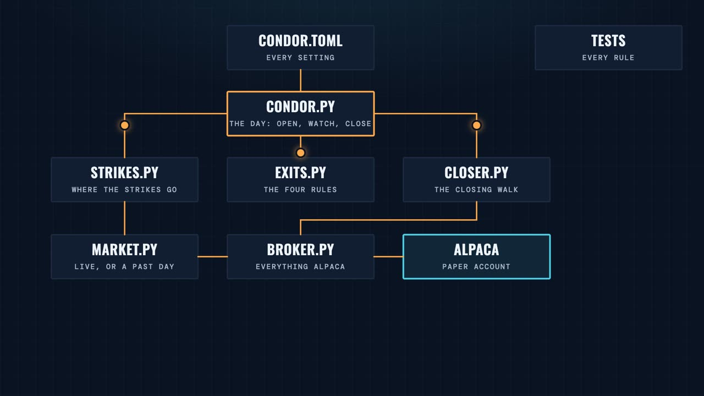
All of it is one small folder of plain Python. By the time you are watching this, it is on GitHub, in the channel's algo trading repository, with every command in order.
The settings file feeds one run of the day. It asks the strikes file for the four legs, the exits file for a decision, and the closer to get out. Only the broker file talks to Alpaca.
And one file, the market, answers two questions: where is the price, and what do the options cost. Today, live, or any past day, replayed.
In the folder:
the settings file, with every number the bot uses,
and a file for each job, with the tests beside them.
One command installs everything the bot needs, in a folder of its own, kept apart from the rest of the laptop.
And the paper keys from your Alpaca account, in two environment variables, never printed. The wheel bot video shows where to make them.
Watching a day again Watch from 8:47
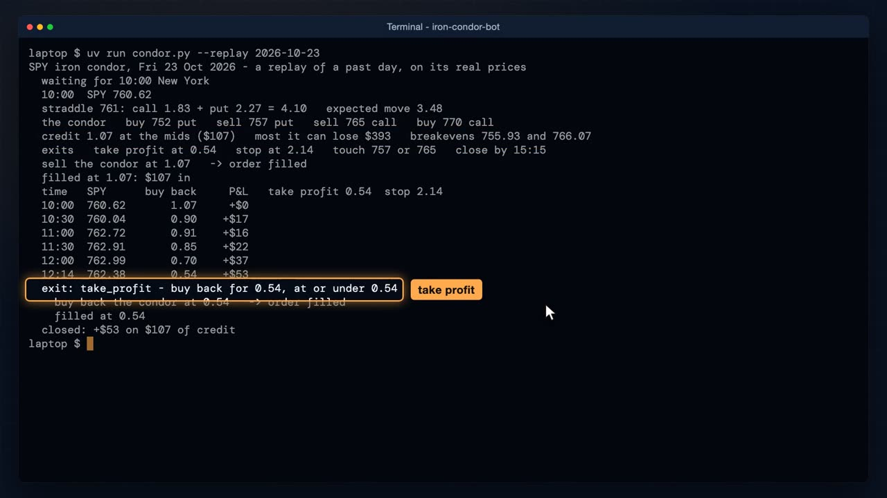
Now let it run that day, the 20 third of October. A replay looks every 60 seconds, and every order fills at the price it asks, so the fills are an estimate. Nothing is sent.
At 14 minutes past 12, buying it back cost 54 cents, half the credit: take profit.
$53 kept, of the $107.
Drawn out, SPY wandered inside the corridor all morning, and hour by hour the condor was worth a little less.
At 14 minutes past 12, the first rule fired: take profit.
The 20 fifth of September. The same command with a different date, the same rules, and a very different morning. Watch how quickly this one is over. It opens the condor at ten, as it always does.
Five minutes after it opened, the stop fired: buying back cost a dollar and 56 cents, against a stop at a dollar and 48 cents.
$82 lost, on a $74 credit.
In those five minutes, SPY dropped almost $3, and the condor's buy-back cost more than doubled.
The stop was set at a dollar and 48 cents. By the time the bot looked, buying back cost a dollar and 56 cents, already past it. A stop limits a loss. In a fast market, it does not hold it at your number.
The fourteenth of October. The same command again with a new date, and this time the touch rule gets its turn. Watch for the line that starts with exit: that is the rule firing.
SPY came down to the short put, at 771, and the touch rule closed the condor.
$37 lost.
SPY slid down through the morning and met the short strike just before 20 to 12.
With the touch rule switched off, the same day ran on to the stop at 11 minutes past 12, and lost $78. Getting out early cost less here. On another day, it might close a trade that would have come back. That is the trade-off you choose.
Last, the seventh of October, with the touch rule switched off for this one run, from the command line, using set. The settings file itself stays exactly as it was.
Nothing else fired, so the clock closed it, at a quarter past three.
$26 kept, closed by the clock.
SPY spent the afternoon climbing to the short call and hanging around it, never far enough to hit the stop.
Then the clock. At a quarter past three the bot closed it, with 15 minutes to spare before Alpaca's cutoff.
A real one Watch from 11:16
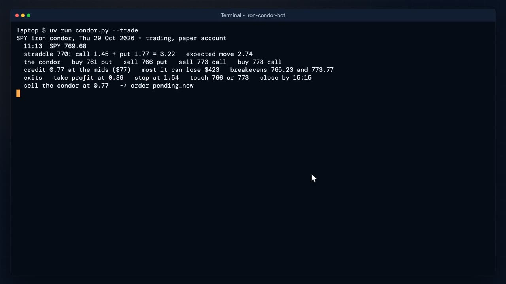
Now a real one, on the paper account, on the 20 ninth of October: the same command, with trade added. It was started after ten, so it opens the condor straight away.
The top line says it: trading, on the paper account.
At 13 minutes past 11 it priced the straddle and chose the strikes: puts at 761 and 766, calls at 773 and 778. All four legs go as one order, asking 77 cents.
It filled at once: $77 in, on the paper account.
Then it watches, with take profit at 39 cents and the stop at a dollar and 54 cents.
Drawn out: SPY's morning, and at 13 minutes past 11 the condor went in around it, with the short strikes at 766 and 773.
Every 60 seconds, a look: SPY, the cost to buy back, the profit or loss. Two minutes in, it was $3 up.
One look, as the program prints it: the time, where SPY is, what buying the condor back would cost, and the profit or loss so far.
And at the broker, Alpaca's orders page: the four legs, as one order, filled. Now stop the program, the way a crash would.
If it crashes Watch from 12:31
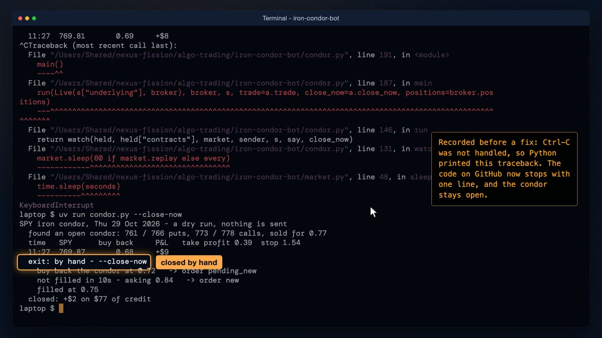
A few minutes later, the same command again.
It keeps no notes of its own, yet it finds the condor in the account: the four strikes, and the 77 cents it was sold for.
And it carries on watching. Its next look came at 27 minutes past 11: nothing was watching the condor in between.
No rule fired, so to show a real close, it is closed by hand, with close now. Its top line wrongly says dry run: close now does send its orders, and that line is fixed in the code on GitHub.
The exit line names the reason: by hand, from the command line.
The closing order asked 72 cents, then 84, and filled at 75.
$2 kept, of the $77. The point is not the $2: a stopped program found its condor and closed it.
At the broker, the closing order: the same four legs, bought back as one.
And if the program stops - a crash, a reboot, a closed laptop - the condor is still open at the broker.
So the bot keeps no notes of its own. When it starts, it reads the account's positions, finds today's four legs and what they were sold for, and carries on watching.
Every rule tested Watch from 13:42
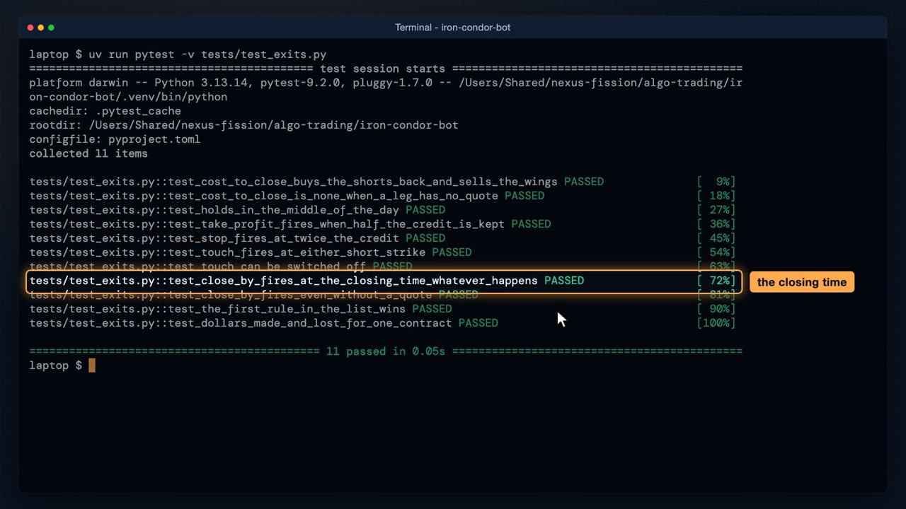
Every rule has a test that feeds it made-up prices, so you can change the code and know it still does what it says.
Take profit, once half the credit is kept,
the stop, once buying back costs twice the credit,
the price reaching or touching either of the short strikes,
the closing time, a quarter past three, whatever the price is doing,
and, when two fire at once, the first rule in the list wins.
36 tests in all, passing.
Four rules, each one tested, each one a line in the settings file you can change.
Taking it further Watch from 14:15
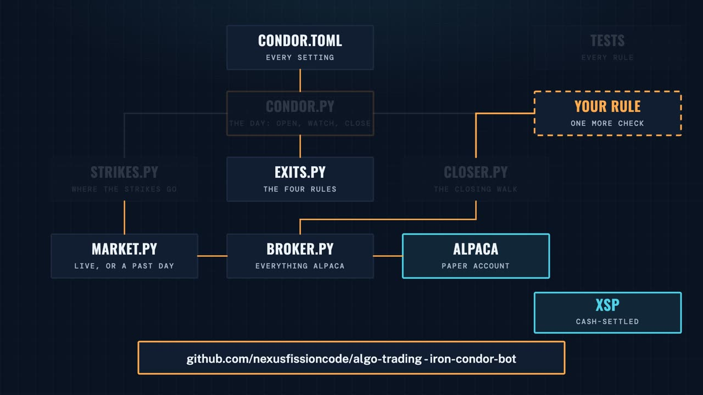
Where to take it from here: change the numbers, or add a rule of your own to the exits file, such as a stop after a set time.
Index options like XSP settle in cash and cannot be assigned early. Alpaca trades them, but its data has no index prices yet, so this bot stays on SPY.
To run it every day without your laptop, the always-on server video sets up the same kind of program on a free cloud machine. The code is on GitHub. This is for education only, and not financial advice: it is about how the trade and the program work, not whether they make money.